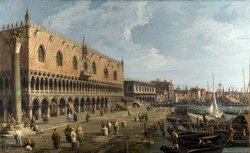
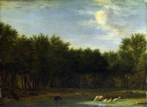
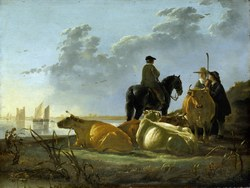

Запустить
<!doctype html> <html> <head> <style> .gallery { display: grid; /* создаются 4 колонки, каждая из которых занимает одну равную долю (фракцию - 1fr) доступного пространства внутри grid-контейнера */ grid-template-columns: repeat(4, 1fr); /* задаёт промежуток между соседними элементами внутри контейнера */ gap: 10px; } .thumbnail { width: 100%; /* aspect-ratio задаёт соотношение ширины и высоты элемента (1 / 1 - квадрат, 16 / 9 - широкое видео, 3 / 4 - вертикально), в данном случае высота должна автоматически рассчитываться из ширины в пропорции 4:3 */ aspect-ratio: 4 / 3; /* растянуть изображение так, чтобы оно полностью заполнило контейнер, сохранив пропорции, а всё лишнее обрезать */ object-fit: cover; cursor: pointer; } .lightbox { display: none; /* position: absolute позиционирует элемент относительно ближайшего позиционированного родителя, а position: fixed - относительно окна браузера (viewport) */ position: fixed; /* inset: 0; = top: 0; right: 0; bottom: 0; left: 0; */ inset: 0; background: rgba(0, 0, 0, 0.5); } .lightbox-content { /* родитель при этом должен иметь position: relative (fixed, sticky) */ position: absolute; /* перемещаем левый верхний угол элемента в центр родителя */ top: 50%; left: 50%; /* сдвигаем назад на половину своей ширины влево (по оси X) и на половину своей высоты вверх (по оси Y) */ transform: translate(-50%, -50%); } .lightbox-content img { /* убрать лишний пробел под изображением */ display: block; /* задаёт максимально допустимую ширину элемента (vw - это viewport width (ширина окна браузера)) */ max-width: 90vw; /* vh - это viewport height (высота окна браузера) */ max-height: 90vh; border-radius: 6px; } .close { position: absolute; top: 10px; right: 16px; font-size: 28px; cursor: pointer; } @media (max-width: 600px) { .gallery { /* 2 равные колонки на телефоне */ grid-template-columns: repeat(2, 1fr); } } </style> </head> <body> <div class="gallery"> <p></p> <p></p> <p></p> </div> <div id="lightbox" class="lightbox"> <div class="lightbox-content"> <span id="closeLightbox" class="close">×</span> <img id="lightboxImage"> </div> </div> <script> const lightbox = document.getElementById("lightbox"); const lightboxImage = document.getElementById("lightboxImage"); const closeBtn = document.getElementById("closeLightbox"); document.querySelectorAll(".thumbnail").forEach(img => { img.addEventListener("click", () => { // получаем URL изображения через свойство img.src, которое, в отличие от img.getAttribute("src"), возвращает абсолютный URL // свойству src объекта lightboxImage присваиваем значение свойства data-атрибута у изображения, по которому кликнули (копируем значение свойства) lightboxImage.src = img.dataset.large; // свойству alt объекта lightboxImage присваиваем значение свойства alt объекта img, по которому кликнули (копируем значение свойства) lightboxImage.alt = img.alt; lightbox.style.display = "block"; }); }); closeBtn.addEventListener("click", () => { lightbox.style.display = "none"; }); window.addEventListener("click", (event) => { if (event.target === lightbox) { lightbox.style.display = "none"; } }); </script> </body> </html>